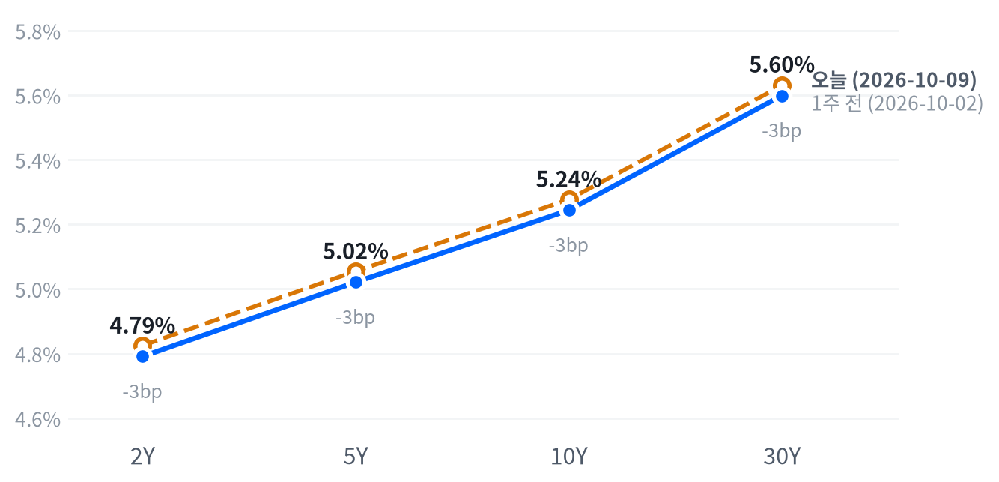

금요일 뉴욕 증시는 목요일 AI주 매도를 일부 되돌리며 세 지수가 함께 올랐지만, 하루를 가른 것은 업종 사이의 재배치였다. 통신주가 스페이스X의 주파수 인수 소식에 무너졌고 헬스케어와 부동산이 가장 강했다.
방어주 안에서 배당 통신주의 근거는 약해졌고 헬스케어의 근거는 강해졌다고 본다. 앞쪽 금리는 약한 소비심리보다 오른 기대인플레에 반응해, 다음 주 CPI가 금리 민감 후보를 먼저 시험한다.
통신주 붕괴가 하루를 지배했다. 스페이스X가 이동통신용 주파수를 사들이기로 했다는 발표 뒤 CNBC는 베라이즌이 8.75% 내려 2002년 7월 이후 최악의 하루를 보냈다고 전했다. 커뮤니케이션서비스는 지수가 오른 날 업종 가운데 홀로 크게 밀렸다. 채권시장에서는 미시간대 소비심리가 예상보다 약했는데도 2년물 금리가 오르고 30년물 금리는 내렸다.
통신 3사의 하락은 이번 분기 이익이 아니라 과점이 보장하던 장기 가격결정력의 값을 다시 매긴 것으로 판단한다. 거래는 FCC 승인 전이고 JPMorgan은 단기 위험이 제한적이라고 봤지만, 주가는 그 근거리 평가를 받아들이지 않았다. 붐비던 방어주 포지션이 헤드라인에 한꺼번에 빠진 과잉 반응이라는 대안도 남는다. 시장이 무엇을 담았는지 보여 줄 가격 지표가 없어 기대와 우리 해석의 차이는 크기를 말할 수 없다. 금리 쪽에서는 활동이 약한데 앞쪽만 오른 모양이 앞쪽 금리가 물가 정보를 따라간다는 10월 2일의 판단과 맞는다.
새 아이디어는 내지 않는다. 방어 스타일 안에서 헬스케어 후보의 가격 근거는 휴매나 별점 호재로 강해졌고, 배당 통신주에 기댄 방어 논리는 약해졌다고 본다. 소프트웨어 후보는 사이버보안과 팔란티어 강세로 근거를 보탰고, 반도체 후보는 엔비디아가 반등에 끼지 못해 약한 쪽에 남았다. 금융·부동산·유틸리티처럼 금리에 민감한 후보는 오늘 올랐지만 10월 13일 은행 실적과 14일 CPI를 연달아 지나야 해 그 전에 판단을 바꾸지 않는다. 통신은 참조 유닛 밖이고 개별 종가도 우리 시세에 없어 10월 26일 베라이즌 실적까지 관찰만 한다.
10월 14일 08:30(ET) 9월 CPI에서 근원 전월비가 컨센서스 0.2%와 뚜렷이 갈렸는데 2년물 종가가 그 방향으로 3.8bp 넘게 움직이지 않으면 앞쪽 금리가 물가를 따라간다는 판단을 거둔다. 10월 26일 베라이즌이 가이던스를 지키고 그날 S&P500보다 뚜렷이 오르면 통신 하락을 장기 가치 재평가로 본 판단이 틀린다. 반도체 후보는 10월 15일 TSMC 실적에서 다시 가린다.
| 지수 | 종가 | 등락률 | 기준일 |
|---|---|---|---|
| 닛케이225 | 69,042.11 | -1.42% | 10월 8일 |
| 항셍 | 23,785.79 | -1.43% | 10월 8일 |
| 상해종합 | 3,811.90 | -0.79% | 10월 8일 |
| DAX | 24,806.97 | -1.18% | 10월 8일 |
| FTSE100 | 10,441.60 | -0.16% | 10월 8일 |
| 유로스톡스50 | 6,126.73 | -0.87% | 10월 8일 |
| VIX | 14.84 | -3.70% | 10월 9일 |
아시아·유럽 지수는 확보된 가장 최근 마감인 10월 8일 목요일 기준이다.
아시아·유럽과 미국이 엇갈렸다. 10월 8일 마감에서 아시아 세 지수는 평균 1.21%, 유럽 세 지수는 평균 0.74% 내렸고 두 지역 모두 빠짐없이 하락했다. 미국은 금요일에 그 약세를 잇지 않고 반등했다. VIX는 14.84로 내려 지난 두 해 가운데 이보다 낮았던 날이 48일뿐인 자리로 돌아갔다.
야간 선물은 목요일 마감 무렵 바닥을 찍고 밤새 올랐다. S&P 선물(ES)은 전날 16:00(ET) 7,817에서 저점을 만든 뒤 08:00 7,854까지 올랐다. 그 사이 CNBC와 Reuters는 트럼프 대통령이 이란과 생산적인 대화를 하고 있고 11월 3일 중간선거 전 공격은 없다고 말했다고 전했고, 브렌트는 02:20(GMT) 무렵 0.7%가량 밀렸다. 24/7 Wall St.는 국채금리가 누그러지며 기술주가 상승 출발을 이끈다고 썼다. 현물은 S&P +0.27%, 나스닥 +0.54%, 러셀2000 +0.13%의 갭으로 열었다.
세 지수 모두 개장 첫 30분이 그날의 저점이었고 오후 늦게 고점을 찍었다. S&P와 나스닥은 고점권 경계 바로 아래에서, 러셀2000은 하루 범위의 가운데에서 끝났다. 갭 상승을 장중에 지키고 더 올린 하루라 매도 압력이 개장 뒤 다시 붙지는 않았다.
고점권·저점권 경계는 최근 2,259거래일의 일간 종가 위치 이력으로 다시 잰 기준이다.
목요일 AI주 매도에서의 기술주 반등과 유가 진정이 지수를 올렸다고 TheStreet와 Yahoo Finance는 전했다. 업종 단위로는 스페이스X의 주파수 인수가 통신주를, 메디케어 어드밴티지 별점이 헬스케어를 움직였다. 델타항공의 실망스러운 3분기 실적이 실적 시즌을 사실상 열었다. 장 마감 뒤 시간외 거래 자료는 받지 못했다.
| 지수 | 종가 | 등락률 |
|---|---|---|
| 다우존스 | 51,654.95 | +0.83% |
| S&P500 성장주 | 145.24 | +0.80% |
| 나스닥 | 27,366.17 | +0.64% |
| S&P500 | 7,811.54 | +0.59% |
| 러셀2000 | 2,806.98 | +0.46% |
| S&P500 가치주 | 233.02 | +0.36% |
| 섹터 | 등락률 |
|---|---|
| 부동산 | +1.86% |
| 헬스케어 | +1.58% |
| 경기소비재 | +1.02% |
| 금융 | +0.92% |
| 유틸리티 | +0.83% |
| 기술 | +0.51% |
| 산업재 | +0.50% |
| 소재 | +0.32% |
| 필수소비재 | +0.01% |
| 에너지 | -0.25% |
| 커뮤니케이션서비스 | -1.51% |
S&P500은 7,812로 끝나 최근 2년(504거래일) 가운데 이보다 높았던 날이 하루뿐인 자리에 섰다. TheStreet는 지수가 사상 최고치에 조금 못 미쳐 마감했고 세 지수가 모두 주간으로 올랐다고 전했다. 나스닥은 27,366으로 같은 기간 이보다 높았던 날이 사흘뿐이다. 오늘 오름폭은 여느 날 움직임과 비슷한 크기였고, 러셀2000은 평소의 절반 남짓 움직여 같은 기간 높은 쪽 21% 안에 머물렀다.
하루 움직임은 최근 60거래일 평균 하루 폭 대비 S&P 0.85배, 나스닥 0.6배, 러셀2000 0.55배다.
S&P는 개장 직후 7,779에서 하루 저점을 찍었다. 그 뒤 오후 내내 올라 14:30(ET) 7,821에서 고점을 만들었고 그 아래에서 마감했다. 나스닥과 러셀2000도 같은 모양이다. 엔비디아만 거꾸로 갔다. 시가 233.88달러가 그날의 고점이었고 정오 무렵 229.11달러까지 밀린 뒤 되돌리지 못했다. 지수를 끌어올린 반등이 AI 대표주까지 번지지는 않았다.
지수 상승 0.59%를 가장 크게 깎은 것은 커뮤니케이션서비스(-0.20%포인트)였다. 기술(+0.17%포인트)·헬스케어(+0.15%포인트)·경기소비재(+0.14%포인트)·금융(+0.10%포인트)이 그 몫을 메우고 남았다. 섹터로 설명되지 않는 부분은 +0.17%포인트다.
섹터 기여는 최근 252거래일 회귀로 추정했고 설명력은 0.976이다. 소재·부동산은 추정에서 식별되지 않아 뺐다.
통신주 급락은 스페이스X에서 나왔다. 스페이스X는 Grain Management로부터 800MHz 대역의 페어드 주파수 최대 14MHz를 사들이기로 했고, 거래에는 FCC 승인이 필요하다. CNBC는 T-모바일이 13.27%, AT&T가 9.81% 내렸다고 전했다. WSJ는 인수가를 약 80억 달러로 봤고, Benzinga는 3사 시가총액이 약 390억 달러 줄었다고 집계했다. Evercore ISI는 스페이스X가 이제 실제 네트워크의 윤곽을 갖췄다고 평가했다. 인수가의 몇 배가 시가총액에서 빠진 셈이라 이 하락은 한 건의 주파수 거래보다 네 번째 사업자의 등장 가능성을 반영한 것으로 본다.
헬스케어 강세에는 개별 재료가 있었다. CNBC와 Reuters는 휴매나가 약 15% 뛰었다고 전했다. 2027년 메디케어 어드밴티지 별점에서 휴매나 가입자의 95%가 4점 이상 플랜에 들었기 때문이다(2026년 20%). JPMorgan은 60~70%를 예상했고, 유나이티드헬스는 81%에서 약 67%로 내려갈 것으로 추정했다. 부동산과 유틸리티의 강세는 10년물 금리가 거의 멈춘 날에 나와 금리 하락으로는 설명되지 않는다.
이 상승은 지수 수준에서는 믿을 만하지만 내용은 고르지 않다고 판단한다. S&P는 갭 상승을 장중에 지키고 고점권 경계 바로 아래에서 끝났고, 성장주(+0.80%)가 가치주(+0.36%)를 앞섰다. 그 성장주 반등은 마이크로소프트·아마존·소프트웨어가 이끌었고 반도체는 빠졌다. 주식과 금리는 그동안 느슨하게 반대로 움직여 왔는데 오늘은 2년물 금리가 오른 날 주가도 올라 그 관계가 하루를 정하지 않았다.
주식과 금리의 최근 60거래일 상관계수 -0.359(직전 60거래일 -0.562).
| 만기 | 종가 | 전일比(bp) | 1주 전 | 주간 변화(bp) |
|---|---|---|---|---|
| 2Y | 4.791% | +3.5 | 4.825% | -3.4 |
| 5Y | 5.021% | +3.0 | 5.055% | -3.4 |
| 10Y | 5.244% | +1.1 | 5.277% | -3.3 |
| 30Y | 5.599% | -0.8 | 5.630% | -3.1 |
네이버 국채 종가 기준(2026-10-09, 전 만기 동일 기준일). 1주 전은 10월 2일.

1주 전(10월 2일)보다 전 만기가 3bp 남짓 내려, 한 주로는 커브 모양이 거의 그대로인 평행 하락이다.
10년물 금리는 5.244%로 최근 2년(504거래일) 가운데 이보다 높았던 날이 엿새뿐인 고점권에 있다. 30년물도 같은 기간 이보다 높았던 날이 이레뿐이다. Benzinga는 10년물이 수요일 5.36%로 24년 만의 최고치를 찍었고 30년물은 주중 5.73%로 2002년 이후 가장 높았다고 전했다. 그 고점에서 한 주를 마감하며 전 만기가 조금씩 내려왔고, 오늘 장기물의 움직임은 거의 멈춘 수준이었다.
하루 움직임은 최근 60거래일 평균 하루 폭 대비 10년물 0.3배, 30년물 0.15배다.
하루로 보면 앞쪽이 오르고 장기물은 내린 베어 플래트닝이다. 2s10s는 45.3bp로 2.4bp, 5년물과 30년물의 금리차는 57.8bp로 3.8bp 좁혀졌다. 한 주로 보면 2년물부터 30년물까지 같은 폭으로 내려 커브 모양이 바뀌지 않았다. 오늘 하루의 플래트닝은 주간 흐름을 뒤집기에는 작다.
앞쪽 상승은 미시간대 10월 예비 조사와 같은 날 나왔다. Reuters와 Benzinga는 소비심리가 46.3으로 컨센서스 47.6과 9월 48.1을 모두 밑돌아 역대 두 번째로 낮았고, 현재 여건 지수는 44.7로 역대 최저였다고 전했다. 같은 조사에서 1년 기대인플레는 4.7%, 장기 기대인플레는 3.5%(9월 3.4%)로 올랐다. 활동 신호가 약했는데 앞쪽이 올랐으니 2년물은 물가 쪽 정보에 반응했다고 본다. 같은 날 무살렘 세인트루이스 연은 총재가 2%로 가려면 추가 인상이 필요하다고 말했다는 보도도 겹쳤다. 장중 금리 경로가 없어 두 재료 가운데 무엇이 2년물을 밀었는지는 10월 14일 CPI 반응에서 갈린다.
오늘 움직임을 실질금리와 기대인플레로 나누지는 못한다. 10년물 실질금리가 10월 8일까지만 나와 있다. 같은 날짜로 맞춘 최신 분해(10월 8일)에서 10년물 6bp 하락 가운데 5bp가 실질금리, 1bp가 기대인플레 몫이었다. 오늘 확인되는 것은 10년물 기대인플레가 2.33%로 2bp, 5년물 기대인플레가 2.34%로 3bp 내렸다는 사실이다. 소비자 조사의 기대인플레가 오른 날 시장의 기대인플레는 내려, 명목금리를 올린 쪽은 실질금리였을 가능성이 크다. 10년물 기간프리미엄 추정치는 10월 2일 1.08%포인트가 최신이다.
신용 쪽은 한 달로 보면 조금 조여졌다. 하이일드 스프레드는 10월 8일 3.15%포인트로 하루 6bp 넓어졌지만 닷새로는 9bp 좁혀졌다. CNBC는 하이일드 금리가 한 달 새 7.22%에서 8.1%로 올랐고 스프레드가 4월 이후 가장 넓다며 전문가들이 이를 빨간불이 아닌 노란불로 본다고 전했다. 투자등급 스프레드는 0.82%포인트로 움직이지 않았다.
5년 뒤 5년 명목금리는 10월 8일 기준 5.45%로 하루 8bp 내렸고, 실질 기준으로는 3.12%다. 기대인플레 지표와의 교차검증은 이번에 할 수 없었다. 위험 프리미엄이 섞인 값이라 시장이 먼 구간 금리를 이 수준에서 거래한다는 정도로 읽는다.
| 통화쌍 | 종가 | 등락률 |
|---|---|---|
| DXY | 102.23 | +0.09% |
| USD/KRW | 1,340.02 | +0.07% |
| USD/JPY | 158.25 | +0.12% |
| EUR/USD | 1.1206 | +0.04% |
외환시장은 거의 멈춰 있었다. 달러지수는 102.23으로 0.09% 올라 여느 날 움직임의 3분의 1에도 못 미쳤고, 레벨은 최근 2년(504거래일)의 한가운데쯤이다. 원/달러는 1,340원으로 같은 기간 이보다 낮았던 날이 나흘뿐인 원화 강세 끝자리에 머물렀다. 엔/달러는 158.25엔으로 높은 쪽 24% 안에 있다.
하루 움직임은 최근 60거래일 평균 하루 폭 대비 달러지수 0.3배, 엔/달러 0.2배, 원/달러 0.11배다.
달러가 조금 오른 데에는 금리차 경로가 가장 그럴듯하다. 2년물 금리가 오른 날 달러도 올랐고, 엔/달러는 새벽 157.75엔 저점에서 오후 4시 158.43엔 고점까지 꾸준히 올랐다. 위험선호로는 설명되지 않는다. 주식과 달러는 최근 60거래일 느슨하게 반대로 움직여 왔는데 오늘은 함께 올랐다. 움직임 자체가 평소보다 훨씬 작아 어느 경로도 확인됐다고 말할 크기는 아니고, 다음 주 CPI 뒤 2년물과 달러가 같은 방향으로 움직이는지가 금리차 경로를 가른다.
주식과 달러의 최근 60거래일 상관계수 -0.271(직전 60거래일 -0.524).
| 품목 | 종가 | 등락률 |
|---|---|---|
| WTI | $91.66 | +0.19% |
| Brent | $104.43 | +0.14% |
| 천연가스 | $3.204 | +1.14% |
| 금 | $4,220.30 | +1.52% |
금이 4,220달러로 1.52% 올라 원자재 가운데 가장 크게 움직였지만 평소 하루 폭과 비슷한 크기였고, 레벨은 지난 두 해의 한가운데쯤이다. 유가는 사실상 제자리였다. WTI는 91.66달러로 여느 날에 비하면 거의 움직이지 않았고, 같은 기간 높은 쪽 14% 안에 머물렀다. 브렌트는 104.43달러로 끝났다.
하루 움직임은 최근 60거래일 평균 하루 폭 대비 금 1.13배, WTI 0.06배다.
유가는 양쪽에서 당겨졌다. 이란과의 대화 소식과 중국의 석유제품 수출 재개는 값을 끌어내렸고, CNBC는 허리케인 이사이아스로 멕시코만 생산 130만 배럴/일(미국 멕시코만 생산의 63%)이 멈췄다고 전했다. 파스카굴라·새럴랜드 정유시설(46만6천 배럴/일)도 위험권에 있다. WTI는 새벽 4시 90.01달러 저점에서 11:30(ET) 92.17달러 고점까지 올랐다가 그 사이에서 끝났다. 브렌트와 WTI의 차이는 12.77달러로, 지정학 위험이 여전히 국제 유종에 더 붙어 있다.
금의 오늘 상승은 원인을 확인하지 못했다. 하루 고점 4,234달러는 아시아 시간인 01:30(ET)에 나왔고, 미국 지표가 나오기 전인 08:30 4,193달러에서 저점을 만든 뒤 다시 올랐다. 금과 금리는 최근 60거래일 느슨하게 반대로 움직여 왔지만 오늘은 2년물 금리가 오른 날 금도 올랐다. 10년물 실질금리는 10월 8일 2.87%로 5bp 내린 것이 최신이라, 오늘 금과 실질금리의 관계는 실질금리가 갱신되면 확인된다.
금과 금리의 최근 60거래일 상관계수 -0.297(직전 60거래일 -0.312).
미국 경기 국면은 골디락스를 여드레째 이어 간다. 오늘은 새로 나온 공식 통계가 없어 좌표가 움직일 수 없다. 성장 점수(-0.024)는 보합 안쪽에 있고, 물가 점수(-0.869)는 여덟 지표가 모두 둔화 쪽을 가리킨다. 미시간대 10월 예비치는 소비가 약하고 소비자 기대인플레가 높다는 신호였지만 공식 통계 묶음 밖이라 좌표에 들지 않는다. 국면을 다시 열 계기는 10월 14일 9월 CPI와 11월 6일 10월 고용이다.
| 지표 | Actual | Forecast | Previous | 발표일 | 컨센 대비 | 직전 대비 | 추세 |
|---|---|---|---|---|---|---|---|
| 구인건수(8월) | 7,079K | — | 7,335K | 2026-08 기준월 | 악화 | 악화(미미) · 3개월 평균 7,336K → 7,199K | |
| 신규 실업수당 청구 | 197,000 | — | 199,000 | 2026-10-08 (10월 3일 주간) | 개선 | 개선(완만) · 4주 평균 206K → 198K | |
| 신규 청구 4주 평균 | 198,000 | — | 200,500 | 2026-10-08 (10월 3일 주간) | 개선 | 개선(완만) · 4주 평균 206K → 201K | |
| 계속 실업수당 청구 | 1,716,000 | — | 1,699,000 | 2026-10-08 (9월 26일 주간) | 악화 | 개선(뚜렷) · 4주 평균 1,777K → 1,711K | |
| 비농업 고용 변화(9월) | +29K | — | +133K | 2026-09 기준월 | 악화 | 악화(미미) · 3개월 평균 +81K → +51K | |
| 실업률(9월) | 4.2% | — | 4.1% | 2026-09 기준월 | 악화 | 개선(미미) · 3개월 평균 4.27% → 4.13% | |
| 평균시간당임금 MoM(9월) | +0.13% | — | +0.32% | 2026-09 기준월 | 악화 | 악화(미미) · 3개월 평균 +0.21% → +0.19% |
| 지표 | Actual | Forecast | Previous | 발표일 | 컨센 대비 | 직전 대비 | 추세 |
|---|---|---|---|---|---|---|---|
| 산업생산 MoM(8월) | +0.02% | — | +0.20% | 2026-08 기준월 | 악화 | 보합 · 3개월 평균 +0.24% → +0.14% | |
| 내구재주문 MoM(8월) | -0.07% | — | +0.87% | 2026-08 기준월 | 악화 | 악화(완만) · 3개월 평균 +1.95% → +0.46% | |
| 신규주택판매(8월) | 684K | — | 643K | 2026-08 기준월 | 개선 | 개선(미미) · 3개월 평균 645K → 666K | |
| 기존주택판매(8월) | 398만 | — | 406만 | 2026-08 기준월 | 악화 | 악화(미미) · 3개월 평균 4,080K → 4,057K | |
| 실질GDP QoQ 연율(2분기) | +2.2% | — | +2.5% | 2026년 2분기 기준 | 악화 | — |
| 지표 | Actual | Forecast | Previous | 발표일 | 컨센 대비 | 직전 대비 | 추세 |
|---|---|---|---|---|---|---|---|
| 소매판매 MoM(8월) | +1.13% | — | -0.46% | 2026-08 기준월 | 개선 | 악화(뚜렷) · 3개월 평균 +1.09% → +0.29% | |
| 미시간대 소비자심리(8월) | 51.7 | — | 55.2 | 2026-08 기준월 | 악화 | 개선(미미) · 3개월 평균 49.3 → 52.1 | |
| 미시간대 소비자심리 10월 예비치 | 46.3 | 47.6 | 48.1(9월 확정) | 2026-10-09 | 하회▼ | — | — |
| 지표 | Actual | Forecast | Previous | 발표일 | 컨센 대비 | 직전 대비 | 추세 |
|---|---|---|---|---|---|---|---|
| CPI YoY(8월) | 3.71% | — | 3.54% | 2026-08 기준월 | 상승 | 교착 · 3개월 평균 3.85% → 3.66% | |
| CPI MoM(8월) | +0.40% | — | +0.07% | 2026-08 기준월 | 상승 | 둔화(뚜렷) · 3개월 평균 +0.66% → +0.02% | |
| Core CPI YoY(8월) | 2.76% | — | 2.79% | 2026-08 기준월 | 하락 | 교착 · 3개월 평균 2.87% → 2.79% | |
| Core CPI MoM(8월) | +0.29% | — | +0.22% | 2026-08 기준월 | 상승 | 둔화(완만) · 3개월 평균 +0.26% → +0.16% | |
| PPI 최종수요 MoM(8월) | +0.40% | — | +0.07% | 2026-08 기준월 | 상승 | 둔화(뚜렷) · 3개월 평균 +0.79% → +0.12% | |
| PCE 물가 YoY(8월) | 3.42% | — | 3.36% | 2026-08 기준월 | 상승 | 둔화(미미) · 3개월 평균 3.59% → 3.41% | |
| Core PCE YoY(8월) | 3.01% | — | 2.98% | 2026-08 기준월 | 상승 | 둔화(미미) · 3개월 평균 3.12% → 3.01% | |
| 미시간대 1년 기대인플레(8월) | 4.0% | — | 4.2% | 2026-08 기준월 | 하락 | 교착 · 3개월 평균 4.43% → 4.27% |
직전 대비는 Actual을 Previous와 비교한 것이고, 추세는 최근 3개월 평균을 그 앞 3개월 평균과 비교한 것입니다(주간 실업수당 청구는 4주 평균끼리). 추세의 세기는 그 지표가 평소 움직이는 폭에 견준 크기이고, 작은 변화는 보합으로 봅니다. 분기 지표인 GDP는 두 비교가 같은 숫자를 보므로 직전 대비만 싣습니다.
연준의 다음 수는 12월 9일 FOMC의 25bp 추가 인상이라는 판단을 이어 간다. The Core Quant가 장 전에 전한 CME FedWatch 집계는 10월 인상 확률을 19%, 12월까지 한 번 이상 인상할 확률을 84%로 잡았다. FXStreet는 같은 날 12월 확률을 85%로 전했다. 관측 시각과 매체가 전날 수치와 달라 하루 변화를 재지 않지만, 10월은 빠지고 12월이 남았다는 방향은 그대로다. 무살렘 총재의 추가 인상 발언도 같은 쪽이라 시점을 옮기지 않는다.
10월 14일 9월 CPI가 컨센서스를 뚜렷이 밑돌아 보도된 12월 인상 확률이 과반 아래로 내려가거나, 11월 6일 10월 고용에서 실업률이 3월 이후 범위(4.1~4.3%) 위로 올라서면 인상 우위 판단을 거둔다. 반대로 CPI가 뚜렷이 웃돌아 보도된 10월 인상 확률이 다시 과반으로 오르면 시점을 10월 쪽으로 당긴다.
일곱 경로의 방향은 전일과 같다. 새 공식 통계가 없는 날이라 어느 경로도 방향을 바꿀 근거가 들어오지 않았다.
| 지수 | 순위(5거래일 전) | 1개월 | 3개월 | SPY 대비 3개월 | 대비 변화 | 12-1 모멘텀 | 변동성 | 1일 VaR 95% | 베타 | 50/200일선 | 52주 고점 대비 |
|---|---|---|---|---|---|---|---|---|---|---|---|
| 소프트웨어 IGV | 1(2) | +11.3% | +21.5% | +17.4%p | +5.7%p | -12.5% | 32.9% | 2.2% | 1.50 | 위/위 | -3.8% |
| 에너지 XLE | 2(1) | +0.8% | +15.4% | +11.2%p | -5.0%p | +49.2% | 20.9% | 2.1% | -0.53 | 위/위 | -0.7% |
| 초대형주 Top 50 XLG | 4(3) | +4.1% | +5.9% | +1.8%p | -0.3%p | +7.8% | 13.8% | 0.9% | 1.21 | 위/위 | -0.4% |
| 금속·광업 XME | 6(11) | -7.3% | +4.2% | +0.1%p | +3.0%p | +12.5% | 35.7% | 3.5% | 1.89 | 아래/아래 | -19.8% |
| 반도체·AI 하드웨어 SMH | 9(4) | +7.7% | +3.0% | -1.2%p | -2.8%p | +62.4% | 36.9% | 3.5% | 2.20 | 위/위 | -9.8% |
| 모멘텀 팩터 MTUM | 11(9) | +5.8% | +1.9% | -2.3%p | -0.1%p | +19.0% | 25.5% | 2.5% | 1.41 | 위/위 | -7.1% |
| 전력망 GRID | 13(13) | +2.3% | -0.1% | -4.3%p | +0.7%p | +16.3% | 24.6% | 2.5% | 1.49 | 위/위 | -8.9% |
| 금융 XLF | 16(16) | -3.4% | -2.0% | -6.2%p | +0.8%p | +7.6% | 12.3% | 1.4% | 0.63 | 아래/위 | -6.2% |
| 경기소비재 XLY | 17(20) | +1.0% | -2.5% | -6.7%p | +2.5%p | -4.7% | 19.3% | 1.6% | 1.16 | 아래/아래 | -8.8% |
| 소형주 IWM | 18(17) | -2.8% | -4.7% | -8.9%p | -0.6%p | +17.5% | 13.3% | 1.4% | 0.94 | 아래/위 | -8.3% |
| 소형 성장 IWO | 20(21) | -2.3% | -5.8% | -9.9%p | +0.1%p | +11.9% | 17.7% | 2.0% | 1.21 | 아래/아래 | -9.7% |
| 산업재 XLI | 21(22) | -0.5% | -5.9% | -10.1%p | +0.8%p | +10.6% | 15.3% | 1.5% | 0.82 | 아래/아래 | -9.0% |
| 은행 KBE | 22(19) | -6.6% | -7.8% | -11.9%p | -2.8%p | +17.3% | 14.2% | 1.5% | 0.59 | 아래/아래 | -11.4% |
| 주택건설 XHB | 24(24) | -1.7% | -11.0% | -15.2%p | +0.1%p | -9.5% | 24.8% | 2.4% | 1.33 | 아래/아래 | -21.1% |
| 방산 ITA | 25(25) | -5.2% | -12.0% | -16.2%p | +3.6%p | +1.6% | 20.1% | 2.2% | 0.79 | 아래/아래 | -18.3% |
| 지수 | 순위(5거래일 전) | 1개월 | 3개월 | SPY 대비 3개월 | 대비 변화 | 12-1 모멘텀 | 변동성 | 1일 VaR 95% | 베타 | 50/200일선 | 52주 고점 대비 |
|---|---|---|---|---|---|---|---|---|---|---|---|
| 헬스케어 XLV | 3(6) | +3.5% | +6.2% | +2.0%p | +1.8%p | +16.1% | 16.3% | 1.4% | 0.14 | 위/위 | -2.4% |
| 퀄리티 팩터 QUAL | 7(7) | +4.2% | +4.1% | -0.1%p | -0.3%p | +11.8% | 9.6% | 0.8% | 0.80 | 위/위 | 0.0% |
| 배당 SCHD | 10(8) | -2.0% | +2.3% | -1.9%p | -1.5%p | +28.4% | 10.6% | 1.0% | 0.25 | 아래/위 | -5.4% |
| 필수소비재 XLP | 14(14) | +1.1% | -0.7% | -4.9%p | +1.4%p | +9.0% | 14.5% | 1.4% | 0.05 | 아래/위 | -5.5% |
| 저변동성 SPLV | 19(18) | -1.9% | -5.0% | -9.2%p | -0.1%p | +3.2% | 8.8% | 0.8% | 0.11 | 아래/아래 | -7.1% |
| 유틸리티 XLU | 23(23) | -1.9% | -8.8% | -12.9%p | +1.2%p | -4.4% | 15.1% | 1.4% | 0.26 | 아래/아래 | -11.4% |
| 지수 | 순위(5거래일 전) | 1개월 | 3개월 | SPY 대비 3개월 | 대비 변화 | 12-1 모멘텀 | 변동성 | 1일 VaR 95% | 베타 | 50/200일선 | 52주 고점 대비 |
|---|---|---|---|---|---|---|---|---|---|---|---|
| 일본 EWJ | 5(5) | +1.5% | +5.5% | +1.4%p | +0.2%p | +23.1% | 19.4% | 1.6% | 1.24 | 위/위 | -1.5% |
| 신흥국 EEM | 8(10) | -0.3% | +3.6% | -0.6%p | +1.9%p | +25.4% | 22.5% | 2.1% | 1.42 | 아래/위 | -6.2% |
| 중국 MCHI | 12(12) | -0.5% | 0.0% | -4.1%p | +0.1%p | -18.6% | 16.4% | 1.8% | 0.48 | 아래/아래 | -18.4% |
| 유럽 VGK | 15(15) | -3.5% | -1.8% | -6.0%p | +0.4%p | +13.5% | 12.3% | 1.2% | 0.78 | 아래/아래 | -7.5% |
| 지수 | 순위(5거래일 전) | 1개월 | 3개월 | SPY 대비 3개월 | 대비 변화 | 12-1 모멘텀 | 변동성 | 1일 VaR 95% | 베타 | 50/200일선 | 52주 고점 대비 |
|---|---|---|---|---|---|---|---|---|---|---|---|
| S&P 500 SPY | – | +3.0% | +4.2% | 0.0%p | – | +13.5% | 11.1% | 0.8% | 1.00 | 위/위 | -0.1% |
| S&P 500 동일가중 RSP | – | +0.3% | -0.2% | -4.4%p | – | +13.0% | 9.9% | 0.9% | 0.63 | 아래/위 | -4.0% |
| 나스닥 100 QQQ | – | +6.1% | +5.7% | +1.5%p | – | +16.3% | 18.1% | 1.5% | 1.49 | 위/위 | -1.1% |
가격 기준 시장 국면은 강세다. 7월 31일 횡보에서 넘어온 뒤 50거래일째이고, 국면을 바꿀 대기 신호는 없다. SPY는 52주 고점보다 0.07% 낮은 자리에서 끝나 사실상 고점에 붙어 있고, 50일선과 200일선 모두 위에 있다.
한 주 사이 가격 근거가 가장 강해진 후보는 소프트웨어다. 2위에서 1위로 올랐고 SPY 대비 3개월 초과수익이 5.67%p 늘어 17.36%p가 됐다. 오늘 사이버보안과 팔란티어 강세가 그 흐름에 하루를 보탰다. 헬스케어는 6위에서 3위로 올라 초과수익이 1.75%p 늘어난 2.05%p다. 휴매나 별점이 업종을 끌어올린 오늘의 강세는 개별 재료라, 3개월 시계의 근거로 삼으려면 보험사 밖으로 번지는지를 봐야 한다. 반도체·AI 하드웨어는 4위에서 9위로 밀렸고 초과수익이 2.81%p 줄어 -1.16%p가 됐다. 엔비디아가 반등에서 빠진 오늘도 그 약세를 되돌리지 못했다.
위험 신호는 엇갈린다. VIX는 14.84로 지난 두 해 가운데 낮은 쪽에 있고, 하이일드 스프레드는 5거래일 사이 9bp 좁혀져 가격 신호는 위험선호 쪽이다. 반면 순유동성이 4주 사이 줄고 금융여건지수도 조금 조여져 유동성 방향은 긴축이다. 금융여건지수가 아직 평균보다 느슨하고, 지수가 고점 부근에서 업종을 갈아타는 날이라 긴축이 가격을 누르는 단계는 아니라고 본다.
시스템 소프트웨어가 지수 기여 상위와 이상 등락에 함께 걸렸다(마이크로소프트 +2.38%, 팔로알토 네트웍스 +5.09%). 24/7 Wall St.와 Investing.com은 지스케일러가 투자자 행사에서 2027 회계연도 매출 가이던스를 재확인하고 IBM·레드햇과 협업을 발표하자 사이버보안주가 함께 올랐다고 전했다. 크라우드스트라이크도 약 4% 올랐다. 마이크로소프트는 확인된 재료 없음. 소프트웨어 후보의 가격 근거를 강하게 하는 묶음이다.
아마존(+3.29%)은 지수 기여 상위였다. 확인된 재료 없음. 목요일 매도 뒤 기술주 반등이라는 하루의 흐름 안에서 움직였다.
애플(-1.11%)은 지수 기여 하위였다. TipRanks와 TradingKey가 인용한 닛케이아시아에 따르면 애플은 부품 공급사에 10월 아이폰 18 프로·프로 맥스 부품 주문을 15~20% 줄이라고 요청했다. UBS는 사전 주문 대기 기간이 작년보다 짧다고 봤다. 초대형주 후보 안에서 하드웨어 쪽 근거를 약하게 하는 재료다.
엔비디아(-0.52%)는 지수 기여 하위였다. 회사 고유의 재료는 확인되지 않았다. CNBC는 1월물 180달러 풋 10만 계약이 약 2,100만 달러에 거래됐다고 전했고, 그 풋은 주가가 22% 빠져야 이익이 난다. 반도체·AI 하드웨어 후보의 가격 근거를 약한 쪽에 묶어 두는 움직임이다.
팔란티어(+5.17%)는 이상 등락으로 걸렸다. Motley Fool과 24/7 Wall St.는 바클레이스가 Overweight 의견과 목표가 265달러로 분석을 시작했다고 전했다. 소프트웨어 후보 안에서 대형 성장주 쪽 근거에 보태지는 재료다.
AI 인프라 다섯 종목은 오늘 평균 1.80% 올라 목요일 낙폭 일부를 되찾았다. 이 묶음이 최근 20거래일 시장보다 6.34% 더 오른 데에는 반도체 축이 +5.13%포인트, 성장−가치 축이 +3.65%포인트를 보탰고 대형−소형 축은 -5.51%포인트를 깎았다. 세 축으로 설명되지 않는 몫은 +3.07%포인트다. 엔비디아가 빠진 날에도 광학 쪽이 반등해 반도체 테마 안에서 종목 사이의 거리가 벌어졌다.
AI 인프라 묶음의 시장 민감도는 2.91이다. 초과 성과는 하루치 초과수익의 20거래일 합이다.
오늘 새로 연 질문은 통신 3사 급락의 성격이다. 우리는 이 하락이 분기 이익 추정치가 아니라 과점이 주던 장기 가격결정력과 낮은 해지율의 값을 다시 매긴 것이라고 본다. 그렇다면 베라이즌이 3분기에 가이던스를 지켜도 실적일 주가는 시장보다 뚜렷이 회복하지 못한다. 대안은 붐비던 방어주 포지션의 과잉 반응이다. 스페이스X가 경쟁할 지상망을 갖추는 데는 시간과 자본이 들고 거래도 FCC 승인 전이다. 시험은 10월 26일 07:00(ET) 베라이즌 3분기 실적 발표일 종가다. 가이던스를 지키면서 지수보다 뚜렷이 오르면 우리 판단이 약해진다. 가이던스가 내려가거나 그 사이 FCC 판단·스페이스X 추가 발표가 겹치면 두 설명을 가르지 못한다. 베라이즌 종가는 우리 시세에 없어 출처 있는 종가 보도를 확보해야 한다.
장기물 질문(9월 29일)은 오늘 종가로 닫는다. 그날 글은 장기 구간 금리가 연준 경로와 따로 높게 붙어 있다고 보고, 10월 9일 종가에서 5년물과 30년물의 금리차가 53.1bp 이상이면 지지로 보기로 했다. 오늘 그 금리차는 57.8bp라 방향은 지지 쪽으로 닫는다. 여유는 작다. 10월 7일부터 이틀 새 6.2bp 좁혀졌고, 마지막 날에는 약한 지표에 2년물이 오르고 30년물이 내려 우리가 기대한 모양과 반대였다. 무엇이 장기 구간을 따로 올렸는지는 끝내 가리지 못했다. 10년물 입찰은 강했고 30년물 입찰 뒤에는 금리가 내려 수급 경로는 확인되지 않았으며, 기간프리미엄 추정치는 10월 2일 값에서 멈춰 재정·글로벌 장기금리·인플레 위험 프리미엄을 나누지 못했다. 실행한 포지션은 없다.
호르무즈 질문(9월 25일)도 오늘 닫는다. 그날 글은 중동 협상 기대가 유가를 낮추고 에너지발 물가 우려를 덜어 2년물과 FedWatch 10월 인상 확률을 함께 끌어내린다고 봤다. 가격 결과는 그 방향에 있다. 9월 25일보다 2년물은 7.3bp 낮고 2s10s는 13.6bp 넓으며, 보도된 10월 인상 확률은 64%(CNBC)에서 19%로 내려왔다. 매체와 시각이 달라 같은 조건의 비교로 쓰지는 못한다. 그러나 경로는 약해졌다고 닫는다. 같은 경로가 관측된 것은 9월 28·29일 두 세션뿐이었고, 10월 인상 확률을 무너뜨린 것은 9월 30일 PCE, 10월 1일 제퍼슨 부의장 발언, 10월 2일 고용이었다. 유가는 그사이 오히려 올랐다. 마지막 이틀도 반대였다. 브렌트가 3.57% 뛴 목요일에 2년물은 내렸고, 이란 긴장이 누그러진 오늘은 2년물이 올랐다. 방향은 맞았지만 우리가 말한 이유로 맞지는 않았다.
10월 2일에 연 앞쪽 금리 질문은 오늘 우리 쪽 관측을 하나 얻었지만 시험은 아직이다. 미시간대 조사에서 활동은 약하고 기대인플레는 올랐는데 2년물만 올랐다. 미시간 조사는 미리 정한 시험이 아니고, 무살렘 총재의 인상 발언 보도가 겹쳐 원인을 가르지 못한다. 시험 전 기대치는 확보했다. 9월 근원 CPI 전월비 컨센서스는 TD·RBC·Kiplinger가 모두 0.2%로 일치하고, 헤드라인 전년비는 3.6%와 3.7%로 엇갈린다. 10월 14일 08:30(ET) 근원이 0.2%와 뚜렷이 갈렸는데 2년물 종가가 그 방향으로 3.8bp 넘게 움직이지 않으면 이 판단은 약해진다. 결과가 컨센서스 근처면 가르지 못한다.
AI 공급망 질문(10월 8일)에는 엇갈린 증거가 들어왔다. 루멘텀 CEO가 광부품 생산능력이 AI 고객 수요로 2029년 초까지 사실상 확약됐다고 밝힌 뒤 광학주가 반등했다(루멘텀 +5.22%, 코히런트 +3.40%). 공급망 호재에 2차 공급망이 낙폭 일부를 메운 것은 포지션 정리라는 대안 쪽 관측이다. 반면 최종 수요의 대표주인 엔비디아는 반등하지 못했고 대규모 풋 거래가 붙었다. 이것은 수요 기대가 꺾였다는 우리 쪽 관측이다. 10년물 금리가 거의 움직이지 않아 할인율은 이날 변수에서 빠진다. 시험은 그대로 10월 15일 02:00(ET) TSMC 3분기 실적이다.
디커플링 질문(9월 22일)은 판단할 날이 오지 않았다. 시험 조건은 금리 민감 업종의 약세와 실질금리 상승이 함께 나온 날인데, 오늘은 부동산과 금융이 올랐고 10월 9일 실질금리는 아직 나오지 않았다. 10월 13일 은행 실적이 대안 쪽의 다음 증거이고, 마감은 10월 28일 FOMC다.
다음 주에는 10월 13일 은행 실적, 14일 08:30(ET) 9월 CPI, 15일 TSMC 실적이 차례로 나온다. CPI가 앞쪽 금리 질문을, TSMC가 AI 공급망 질문을 가르고, 통신 질문은 10월 26일 베라이즌 실적까지 기다린다.
이 보고서의 시세는 Yahoo Finance와 네이버 국채 종가, 경제지표는 FRED와 각 발표 기관(BLS·BEA·Census 등), 그 밖의 내용은 본문에 밝힌 출처에서 가져왔다. 이 보고서는 투자 자문이 아니며 특정 자산의 매수·매도를 권유하지 않는다. 투자 판단과 그 결과에 대한 책임은 전적으로 투자자 본인에게 있다.